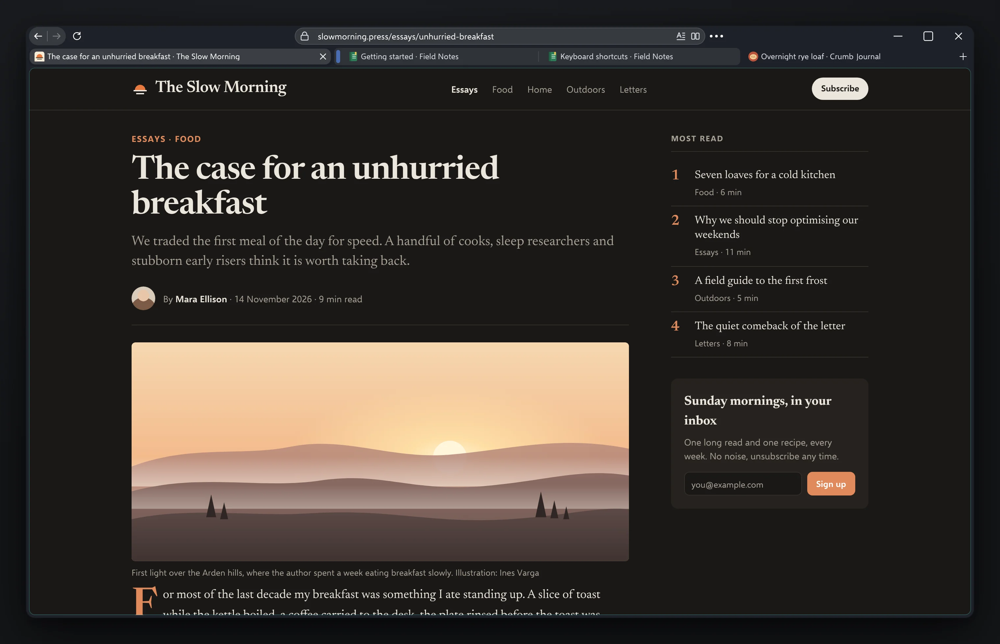
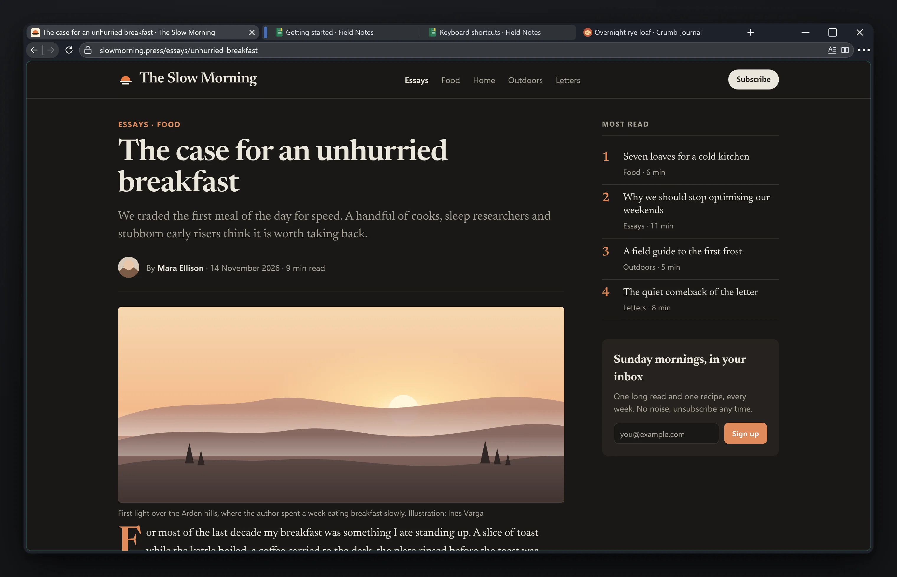
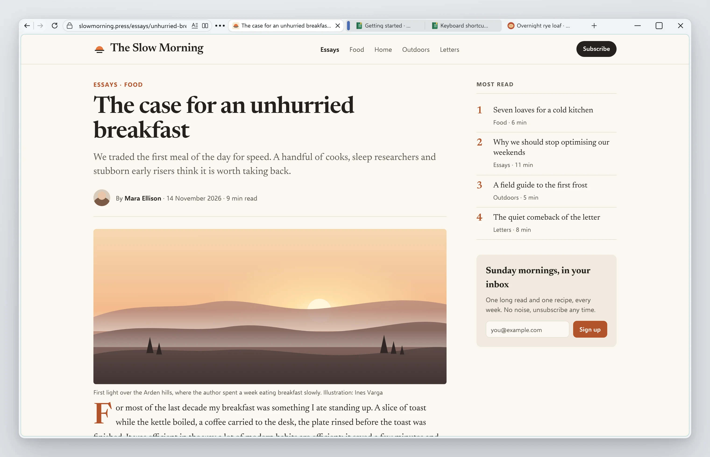
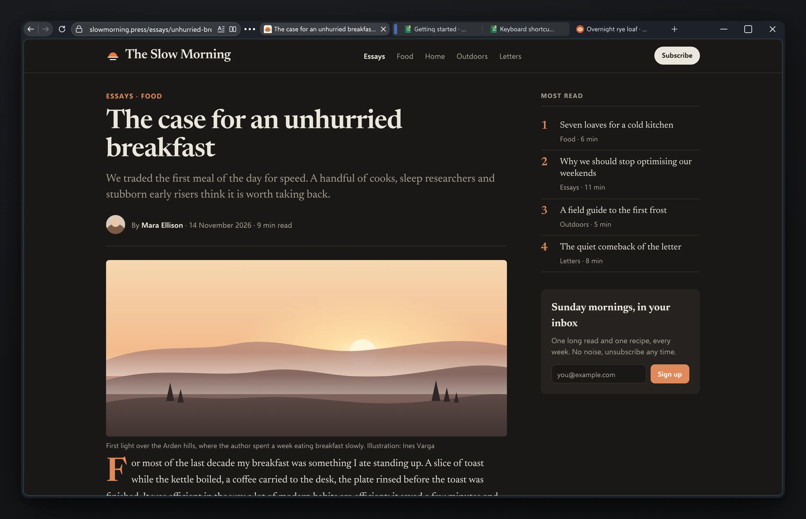
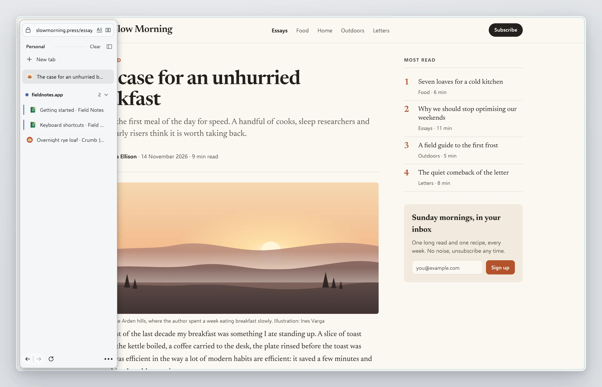

Features
Everything Bowser does, and the keys that do it. It is a small browser, so this list is the whole thing.








Tabs and windows
- Four layouts
- Toolbar above the tabs, tabs above the toolbar, a single row, or vertical tabs. Choose in Settings, Appearance.
- Tab islands
- Tabs from the same site gather into an island you can name, colour, fold or drag as one. Undo any change to the islands.
- CtrlShiftZ
- Split view
- Two pages side by side. Drag a tab to either half of the page, and drag the divider to resize.
- CtrlShift\
- Workspaces
- Separate sets of tabs for separate jobs, one click apart.
- Tabs that come back
- Your tabs reopen after a restart, an update or a crash, in every window.
- Sleeping tabs
- When Windows runs short of memory, tabs hidden for a while are unloaded and reload when you return. Pinned tabs, tabs playing sound and tabs still loading are never unloaded.
Getting around
- Command palette
- Search open tabs, bookmarks, history and every browser command from one box.
- CtrlShiftK
- Address bar
- Type an address or a search. Searches go to the engine you choose; suggestions are off until you turn them on.
- CtrlL
- Bookmarks
- A bookmarks bar and folders, kept in your profile.
- CtrlD
- History
- A page of visits grouped by day that filters as you type. History can be turned off per profile.
- CtrlH
- Downloads
- A toolbar bubble with progress, speed and time left, plus pause, resume and show in folder.
- CtrlJ
Reading and watching
- Reader view
- Strips a page back to the article, set in a comfortable column.
- CtrlAltR
- Translate
- Turns a page into your language in place with Google Translate, and back again. It only runs when you ask.
- Picture in picture
- Pops a playing video out into its own small window.
- CtrlShiftY
- Zoom per site
- Each site remembers its own zoom level.
- Ctrl+ Ctrl−
Your things
- Profiles
- A separate browser for each person or each part of your life, with its own sign-ins, history and taskbar button.
- CtrlShiftM
- Passwords and passkeys
- An encrypted vault in your profile. Generate, edit and fill passwords, and import a CSV from another browser.
- Ctrl,
- Notes and tasks
- A sidebar for quick notes and a to-do list, docked beside the page.
- CtrlShiftN
- Import
- Bring bookmarks from Chrome, Edge, Brave or Firefox. The other browser's files are only read, never changed.
- Extensions
- Install from the Chrome Web Store or Edge Add-ons, a .crx file or an unpacked folder. Settings shows what each one can read and change.
- CtrlShiftE
Privacy
- Ad and tracker blocker
- On from the first launch, with a switch per site. How it works
- Private tabs
- Nothing recorded, cookies kept in memory, strict tracking prevention, always blocking.
- CtrlShiftP
- Permissions start blocked
- Camera, microphone, location, notifications and pop-ups work only on sites you allow.
- Privacy dashboard
- See what was blocked and clear cookies, cache or history for a time range.
- CtrlShiftDel
- Spoiler shield
- Hides GTA VI spoilers behind a click-to-reveal cover. On by default, and off in one switch.
Under the hood
- About 10 MB
- Pages are drawn by the WebView2 runtime Windows already shares, so Bowser brings no engine of its own.
- Efficiency mode
- On battery, hidden tabs rest sooner and background tabs are kept lean.
- Checked updates
- A new build installs only when its SHA-256 matches the one pinned in the repository, and a build that fails to start is rolled back.
- Glass window
- The system backdrop on Windows 11 and tinted acrylic on Windows 10. Light and dark follow Windows.
- Open source
- Written in Rust, every line on GitHub.